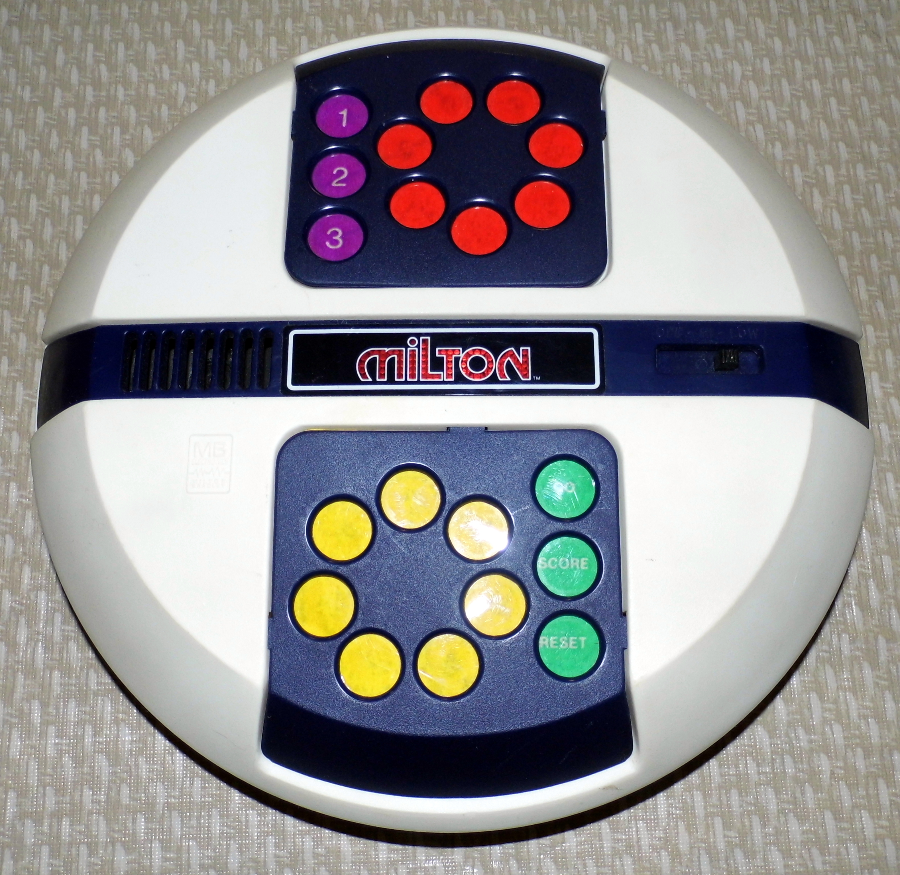

Milton
The talking game that memorized phrases and insulted you

Overview
Milton was an electronic talking game manufactured by the Milton Bradley Company in 1980. According to the inventors' patent (US 4,326,710), it was the first electronic talking game that allowed two people to play against each other — a deliberate break from earlier talking devices like Texas Instruments' Speak & Spell, which were primarily teaching tools. The game is a single electronic unit, powered by an AC adapter, with seven red buttons and seven yellow buttons and a built-in speech synthesizer.
The gameplay is memory played with voices. Milton recites seven completed three-word phrases. A player presses one of the top red buttons to hear the beginning half of a phrase, then one of the bottom yellow buttons to hear its ending. Match them correctly and you score a point; match them wrong and Milton answers with a sarcastic laugh, a razz sound, or the words 'Garbage,' 'Ridiculous,' 'Absurd,' or 'No Way.' Because every phrase's beginning and ending are locked to specific buttons, the game becomes an adversarial memory contest — and the machine is the one holding the answers.
Deep dive
Milton is Simon's premise re-expressed as speech: instead of echoing light and tone patterns, the machine becomes a talking memory partner. Two players take turns matching phrase fragments while Milton judges each attempt aloud. Wrong answers are punished with insults — an early, mass-produced instance of a machine with a personality and an attitude. The voice was designed to sound more human by using an accent and casual dialect, and the speech synthesizer reused wave samples across contexts to fit the limited memory, producing what Popular Mechanics called 'ersatz speech.'
Per Electronics magazine's 1981 account, 'Squeezing Milton's voice into memory,' the game's chip accepted only 15 bytes of input. Using all 15 bytes at full precision would have required roughly 700K of read-only memory at a bit rate of 12,000 to produce a 100 Hz frame rate — impractical in 1980. The designers instead sampled waveforms and reused speech segments that occurred in only one context, an early feat of lossy compression-by-necessity that let a toy talk.
Milton was one of seven games featured on the April 1980 cover of Playthings magazine's Special Toy Fair issue. Popular Mechanics wrote in September 1980: 'We would have played more with Milton from Milton-Bradley, but the long line of people waiting to be insulted by this talking wonder discouraged us.' It never matched Simon's success, but it stands as the first competitive talking game and a milestone in making synthesized speech playful rather than instructional.
Team & pioneers
- Jeffrey D. Breslow. Co-inventor (US Patent 4,326,710), Milton Bradley design studio
- Erick E. Erickson. Co-inventor (US Patent 4,326,710)
- Milton Bradley Company. Manufacturer and publisher, 1980